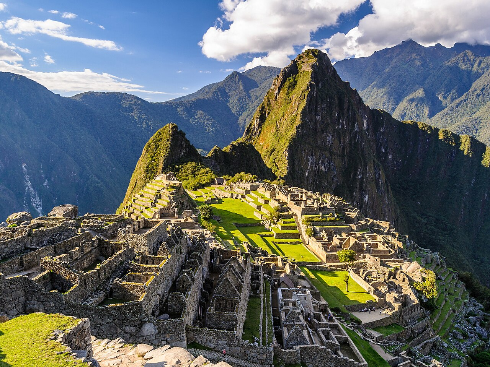

Descripción
Machu Picchu es una antigua ciudad inca ubicada en las montañas de Perú.
Es conocida por sus ruinas, sus paisajes naturales y su importancia histórica y cultural.

Sitios para visitar
- Ciudadela de Machu Picchu
- Huayna Picchu
- Templo del Sol
- Cusco
Precios aproximados
- Vuelo: $700
- Hotel: $80 por noche
- Entrada: $50
- Tour: $150
Estadía recomendada: 5 a 7 días